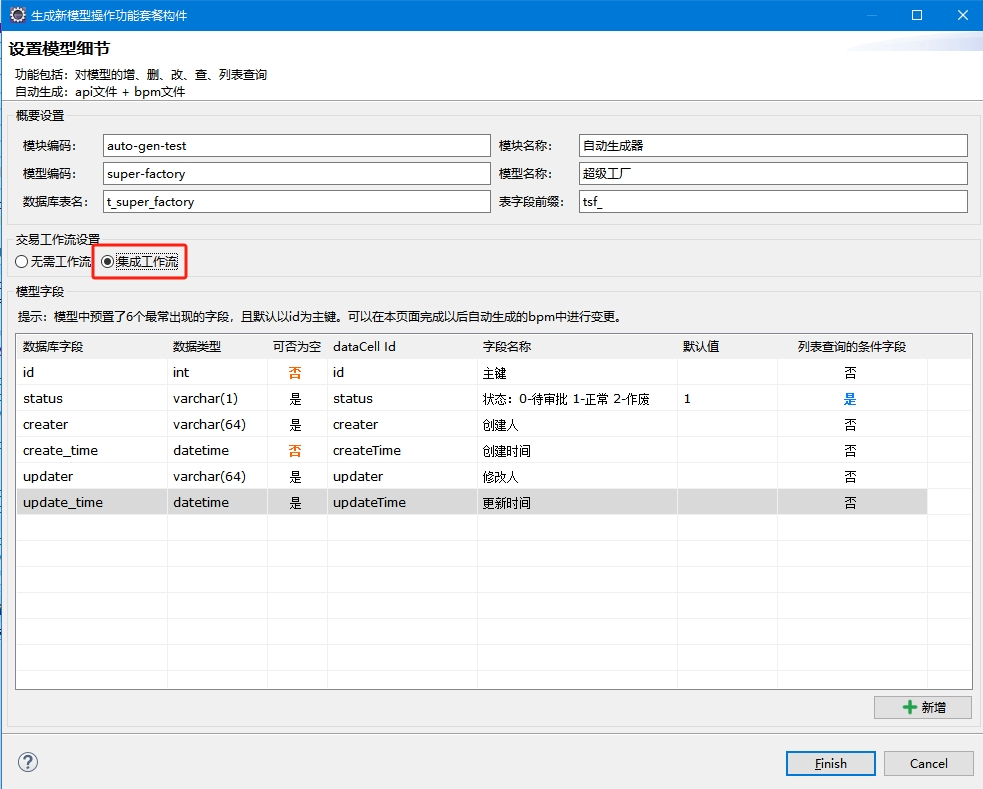

如图，选择“集成工作流”选项后，为该模型生成的“增、删、改”交易的构件中都加入了工作流元素，需要走审批流程后才能生效。

如何为交易指定配套流程、如何设置流程中各节点，请参见第22章节工作流模块的文档
| 序号 | 文件性质 | 功能 | 文件 |
|---|
| 1 |
数据库ddl脚本 |
建表脚本 |
${project}/database/mysql/ddl/create_${模型code}.sql |
| 2 |
后台构件 |
增删改查接口定义文件 |
${project}/src/main/resources/edk4j/api/${模块code}/${模型code}.api |
| 3 |
增删改查业务逻辑文件 |
${project}/src/main/resources/edk4j/bpm/${模块code}/${模型code}.bpm |
| 4 |
前端构件 |
综合管理html网页和配套js |
${project}/src/main/webapp/view/${模块code}/model-${模型code}.html |
| 5 |
${project}/src/main/webapp/javascript/${模块code}/model-${模型code}.js |
| 6 |
编辑html页面和配套js（新增或修改时使用） |
${project}/src/main/webapp/view/${模块code}/edit-${模型code}.html |
| 7 |
${project}/src/main/webapp/javascript/${模块code}/edit-${模型code}.js |
| 8 |
申请删除流程操作html和配套js |
${project}/src/main/webapp/view/${模块code}/apply-delete-${模型code}.html |
| 9 |
${project}/src/main/webapp/javascript/${模块code}/apply-delete-${模型code}.js |
| 10 |
新增或修改的授权html页面和配套js |
${project}/src/main/webapp/view/${模块code}/auth-edit-${模型code}.html |
| 11 |
${project}/src/main/webapp/javascript/${模块code}/auth-edit-${模型code}.js |
| 12 |
删除的授权html页面和配套js |
${project}/src/main/webapp/view/${模块code}/auth-delete-${模型code}.html |
| 13 |
${project}/src/main/webapp/javascript/${模块code}/auth-delete-${模型code}.js |
| 序号 | 交易名称 | 接口 | 逻辑id | 交易说明 |
|---|
| 1 |
提交新增申请 |
/${modelCode}/create |
${modelCode}-manage.startCreate |
|
| 2 |
新增授权落地 |
流程流转交易 |
${modelCode}-manage.finishCreate |
审批同意时，被工作流流转交易调用 |
| 3 |
申请修改 |
/${modelCode}/update |
${modelCode}-manage.startUpdate |
|
| 4 |
修改授权落地 |
流程流转交易 |
${modelCode}-manage.finishUpdate |
审批同意时，被工作流流转交易调用 |
| 5 |
删除申请 |
/${modelCode}/destory |
workflowInstance.createInstanceBL |
该交易调用工作流模块的公共逻辑 |
| 6 |
删除授权落地 |
流程流转交易 |
${modelCode}-manage.finishDelete |
审批同意时，被工作流流转交易调用 |
| 7 |
查询明细 |
/${modelCode}/query-detail |
${modelCode}-manage.queryDetail |
|
| 8 |
查询列表 |
/${modelCode}/query-list |
${modelCode}-manage.queryList |
综合管理页面会调用本接口 |